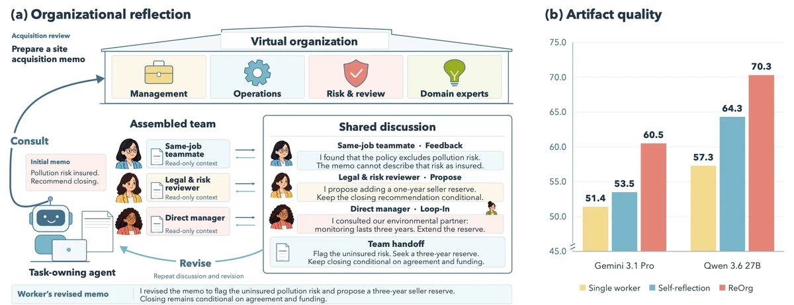
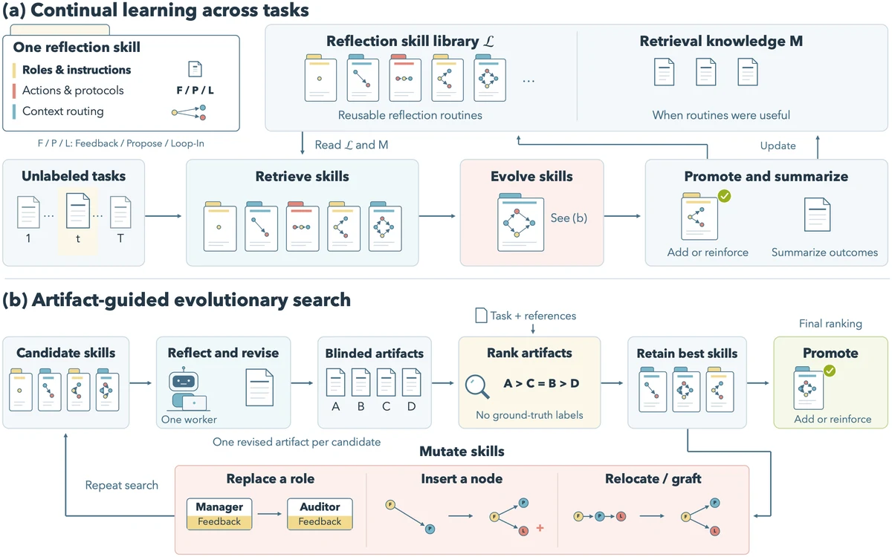

ReOrg: Evolving Reflective Organization Skills
for Enterprise Agents
1University of California, Los Angeles · 2Google Cloud AI Research
One agent does the work.
A learned organization makes it ready to hand off.
GDPval win + tie rate (%)
01 · The problem
Done is not the same as ready.
Long-horizon agents can now write the memo, build the spreadsheet and draft the deck. Whether that artifact is ready for someone else depends on who reads it. A manager checks whether it answers the assignment. A legal reviewer checks what could go wrong when it is relied on. A teammate checks the numbers.
People get these perspectives from the organization around them. Agents usually get two choices: wait for a human to give more guidance, or critique their own work. In a pilot, feedback from a single simulated manager already beat the agent's own self-review.
Pilot: GDPval win + tie rate (%), Gemini 3.1 Pro
Can we place an agent inside an organization where stakeholders act as surrogate users?
02 · The method
An agent in a virtual organization, just like humans.
A planner assembles simulated stakeholders who inspect the current artifact and hand back their contributions. The worker alone revises the deliverable, for up to three rounds.
The worker owns the deliverable
Stakeholders inspect files and check numbers with local tools in separate read-only contexts. They never edit the artifact.
Three ways to contribute
Feedback flags defects and risks. Propose suggests concrete changes. Loop-In consults another colleague and returns a joint summary.
A skill is a small graph
Each node pairs a stakeholder role with an action, and edges route contributions downstream. A skill stores no task content, so it can be reused on new tasks.
One reflection round, step by step
Reflection skill
Worker's memo
Discussion
View the overview figure from the paper

03 · Learning without labels
Learn who to ask, and how, from unlabeled tasks.
ReOrg evolves a library of reflection skills on a stream of 20 unlabeled tasks. Every candidate skill is judged by the artifact it produces, not by its description, and no reference answers or rubrics are used.
Retrieve
The planner picks seed skills from the library using its notes from earlier tasks.
Mutate
Beam search replaces a role, inserts a node, or relocates and grafts an edge.
Reflect and revise
Each candidate runs for real: stakeholders reflect, and the worker revises once.
Rank blindly
The same model ranks blinded artifacts against the task materials. No ground truth.
Promote and summarize
Strong skills join the library, and notes on what helped feed the planner.
Watch the skill library grow
View the continual-learning figure from the paper

04 · Results
Gains that transfer across domains and models.
Libraries learned on 20 GDPval tasks are frozen, then tested on GDPval, JobBench and Harvey's Legal Agent Benchmark (LAB).
ReOrg is the strongest method on GDPval for both models, and stays at or near the top on JobBench and LAB without adapting to them.
With Qwen, skills learned in any one domain improve all three: every one of the nine pairs beats a random organization.
Gain over single worker (points)
Gain over random organization (points)
Skills learned by Gemini and Qwen also help a different model: GPT 5.6 Luna rises from 72.4 to 76.2 on GDPval.
The gains cost compute: ReOrg scores highest but uses more tokens per task than the strongest baselines.
Gemini 3.1 Pro
Qwen 3.6 27B
05 · A closer look
From a losing workbook to a 3–0 win.
A held-out GDPval task with Qwen 3.6 27B: build a workbook of wells across eight Illinois municipal systems and email the manager a list of candidates. After each round, three judges compare the workbook with an expert's.
06 · Citation
Cite ReOrg
@article{wu2026reorg,
title={ReOrg: Evolving Reflective Organization Skills for Enterprise Agents},
author={Wu, Di and Han, Rujun and Chen, Yanfei and Ming, Yifei and Yu, Han and Zhuang, Yufan and Pfister, Tomas and Lee, Chen-Yu},
year={2026}
}